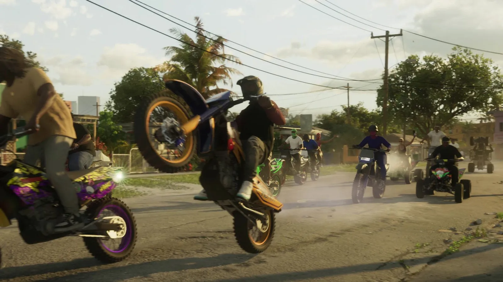
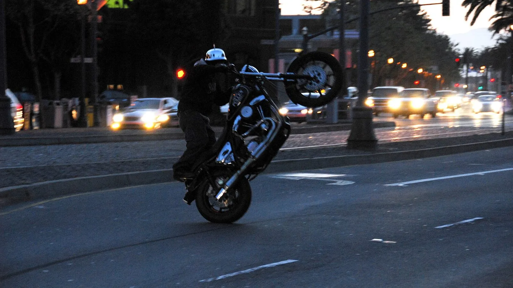
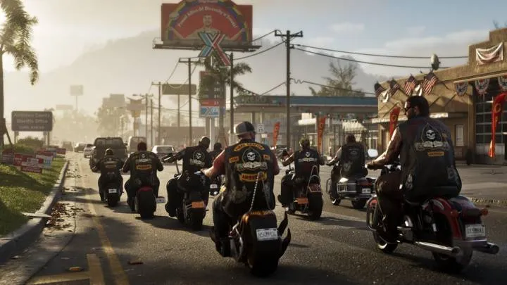
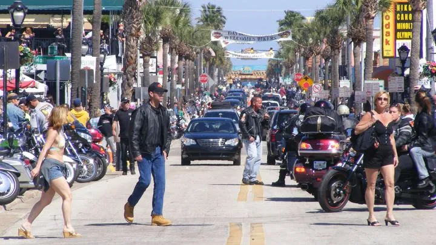
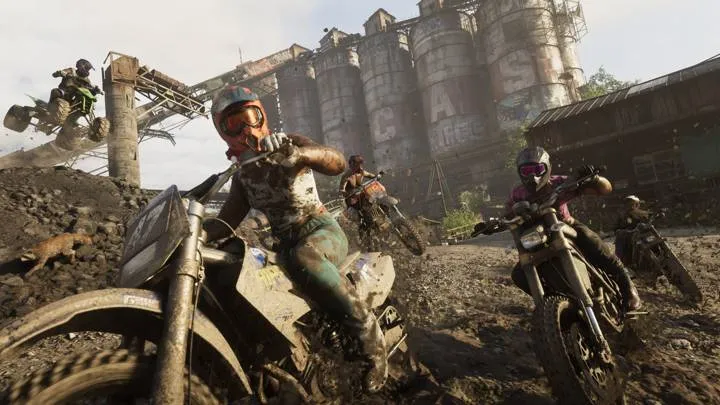
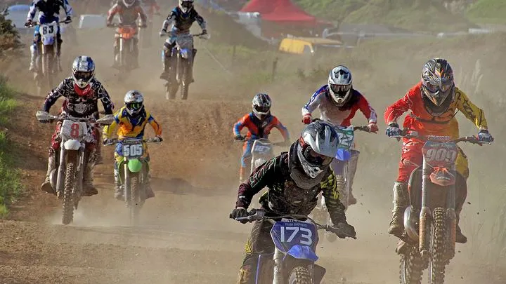

Байкеры на дыбах из трейлера GTA 6 и заезд Wheels Up, Guns Down
Опубликовано:
Сцена узнаётся: десятки кроссовиков и квадроциклов на заднем колесе прямо на городской улице — так выглядит ежегодный заезд в Майами. Но Rockstar прототип не называла: это версия СМИ, а улица и люди в кадре — свои.


- В первом трейлере GTA 6 группа на кроссовых мотоциклах и квадроциклах едет на заднем колесе по жилой улице с пальмами и проводами.
- Kotaku назвал сцену очень похожей на Wheels Up, Guns Down — ежегодный заезд байкеров во Флориде и Джорджии.
- В Майами его проводят в День Мартина Лютера Кинга (январь): мотоциклы, кроссовики и квадроциклы выезжают на улицы.
- Участники говорят, что едут за мир в районах, где стреляют; полиция каждый год штрафует, арестовывает и изымает технику.
- Rockstar прототип не подтверждала.
Что в игре
Первый трейлер GTA 6 (5 декабря 2023) собран из коротких сценок жизни Леониды. В одной из них по жилой улице с пальмами и проводами над дорогой едет целая толпа: кроссовые мотоциклы и квадроциклы. Райдер на оранжевом кроссовике в центре кадра поднял переднее колесо, рядом — фиолетово-жёлтый мотоцикл, сзади ещё несколько кроссовиков и квадроциклов, на обочине стоят люди.
Это не миссия, а сценка в стиле роликов из соцсетей — таких в трейлере около десятка.
Что в реальности
Kotaku в разборе трейлера (6 декабря 2023) написал, что сцена «очень напоминает» Wheels Up, Guns Down — ежегодное событие во Флориде и Джорджии, которое собирает байкеров ради мира и против насилия. Второе название — Bikes Up, Guns Down.
В Майами заезд проходит в День Мартина Лютера Кинга — третий понедельник января. CBS Miami в 2016 году описывал его так: мотоциклы, квадроциклы и кроссовики, путь от Майами-Гарденс в округ Бровард, хэштеги #BikesUpGunsDown и #MLKRideOut. Одни ехали по правилам, другие — на заднем колесе, по встречке и по тротуарам. Дорожный патруль Флориды тогда сказал, что гоняться за ними не будет: это нарушения ПДД, а не тяжкие преступления.
Это единственный раз, когда мы собираемся вместе и создаём мир в районе.
участник заезда, CBS Miami, 2016
С годами полиция стала жёстче. В январе 2024 года Local 10 приводил данные полиции после заезда: более 621 штрафа, 165 арестов, 82 изъятых транспортных средства, 25 изъятых единиц оружия и 16 найденных угнанных машин. В январе 2026-го шериф округа Майами-Дейд Рози Кордеро-Стутц заранее предупреждала участников не устраивать захват улиц.
Свободных фото самого заезда в Майами нет, поэтому реальный кадр здесь — просто уличный «вилли» в другом городе. Само событие хорошо видно в новостных сюжетах Local 10 и CBS Miami.
Совпадает и отличается
| Реальность | GTA 6 | |
|---|---|---|
| Кроссовики и квадроциклы толпой на улице | Да, каждый январь | 🟢 Да |
| Езда на заднем колесе | Да, часть участников | 🟢 Да |
| Место | Улицы Майами-Дейд и Бровард | 🟡 Жилая улица Леониды |
| Название и повод | Wheels Up, Guns Down, День Мартина Лютера Кинга | 🔵 В трейлере не названы |
- Кроссовые мотоциклы и мотокросс в GTA 6 — все кадры и таймкоды
Источники: Rockstar Games — первый трейлер GTA 6 (5 декабря 2023); Kotaku — разбор отсылок трейлера, слайд «Wheels Up, Guns Down» (6 декабря 2023); CBS Miami — «Riders Take To The Streets For Bikes Up, Guns Down Rally» (18 января 2016); Local 10 — «Wheels Up, Guns Down riders travel through Miami-Dade streets» (15 января 2024); Local 10 — шериф Майами-Дейд о заезде (16 января 2026); Wikimedia Commons — фото Tinou Bao (CC BY 2.0).
Реальные фото: Фото: Tinou Bao from San Francisco, USA, CC BY 2.0 · Wikimedia Commons. Кадры игры: Rockstar Games.
Каждый день — одно сравнение: кадр игры рядом с реальным фото. Подписывайтесь:
YouTubeInstagramTikTokСмотрите также

 vs
vs

vs

vs